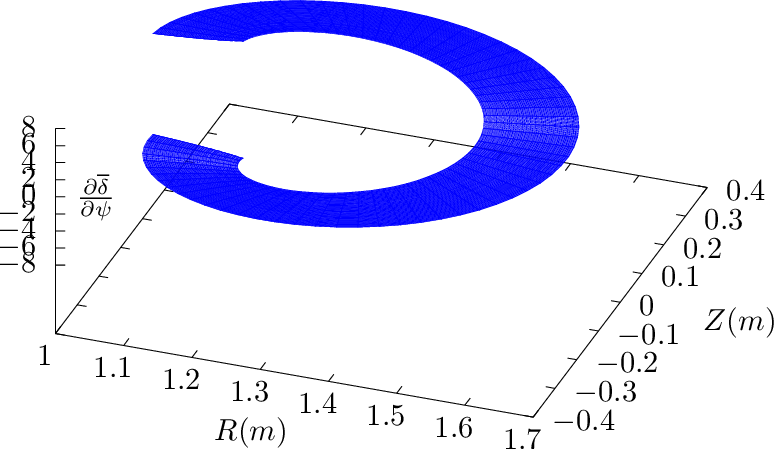
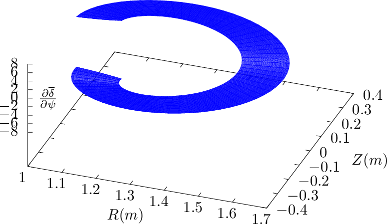

, hαR = ∇α⋅
, hαR = ∇α⋅ , etc. Explicit expressions for these elements can be
written as
, etc. Explicit expressions for these elements can be
written as Let ψ = r and deï¬ne hψR = ∇ψ ⋅, hαR = ∇α⋅, etc. Explicit expressions for these elements can be
written as


![hαR = ∇[α ⋅ ˆR ]
ˆϕ ( ∂δ R ∂δ R ) (∂δ R ∂δ R )
= R-+ ∂ψ-𝒥 Z 𜃠− ∂𝜃-𝒥-Zψ ˆR + ∂𝜃-𝒥-Rψ − ∂ψ-𝒥-R𜃠ˆZ ⋅R ˆ
- -
∂δ-R- ∂-δR-
= ∂ψ 𝒥 Z𜃠− ∂ ğœƒğ’¥ Zψ
∂δ R ∂δ R
= -----rcos𝜃− -----sin 𝜃
∂ψ 𒥠∂𜃠ğ’¥
= −-∂δcos𜃠+ ∂δ1 sin𝜃
∂ ψ ∂𝜃r
∂-δ 1
= −∂r cos𝜃+ ˆqr sin𝜃](tokamak_equilibrium492x.png)
![hαZ = ∇[α ⋅ ˆZ ]
ˆϕ ( ∂δ R ∂δ R ) (∂ δR ∂δ R )
= R-+ ∂ψ-𝒥-Z𜃠− ∂𝜃-𝒥-Zψ ˆR + ∂-ğœƒğ’¥-Rψ − ∂ψ-𝒥-R𜃠ˆZ ⋅ ˆZ
- -
∂δ-R- ∂δ-R-
= ∂𜃠𒥠R ψ − ∂ψ 𝒥 R 𝜃
1 ∂δ
= − ˆq cos𝜃− ---sin 𝜃
r ∂r](tokamak_equilibrium493x.png)
 | (378) |
Using expression (372), dδ∕dr can be evaluated analytically, yielding
![- ( ) [ ]
dδ dq -(R0-− r) ( 𝜃) ---------1---------- ( 𝜃) d- (R0-−-r)-
dr = 2 dr arctan ∘R2--−-r2 tan 2 + 2q ( ( ))2 tan 2 dr ∘R2-−-r2
0 1+ √(RR20−−r)r2 tan 𝜃2 0
( ( ) ) 0 ( )
dq -(R0-− r) 𜃠---------1---------- 𜃠------− R0------
= 2 dr arctan ∘R20-−-r2 tan 2 + 2q ( (R− r) ( ))2 tan 2 (R0 + r)∘R20 −-r2
1+ √R20−r2 tan 𝜃2
0](tokamak_equilibrium495x.png)
 arctan(x) = arctan(x) = 
|
(I did not remember this formula and I use SymPy to obtain this.) These expressions are used to benchmark the numerical code that assume general flux surface shapes. The results show that the code gives correct result when concentric circular flux surfaces are used.
Â
Taking the 𜃠derivative of δ, equation (372) is written as (using Sympy)
|
| (379) |
where
 | (380) |
Equation (369) should be equal to  given by Eq. (369). This was veriï¬ed numerically.
given by Eq. (369). This was veriï¬ed numerically.
Â
Taking the r derivative of Eq. (352), we obtain
 | (381) |
i.e.,
 | (382) |
 | (383) |
Â
Â
 

Â
 . Note that ∂δ∕∂ψ is discontinuous at the 𜃠cut, which in this case is on the high-ï¬eld-side.
. Note that ∂δ∕∂ψ is discontinuous at the 𜃠cut, which in this case is on the high-ï¬eld-side.